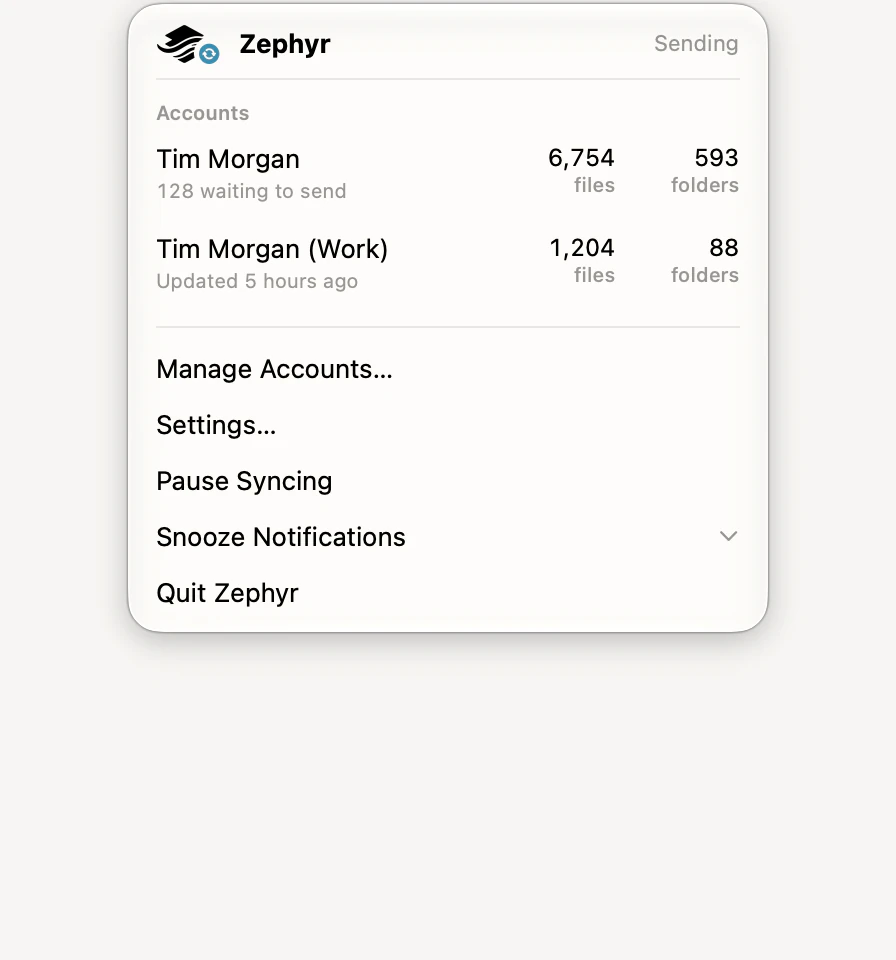

Zephyr n’a pas de fenêtre principale qui reste ouverte. Son icône dans la barre des menus indique l’état de la synchronisation, et un clic dessus ouvre le panneau qui contient tout le reste.
Cliquez sur l’icône de Zephyr dans la barre des menus.

Le panneau indique en haut ce qui concerne ce Mac et, plus bas, ce qui concerne chaque compte, sans jamais dire la même chose aux deux endroits.
La ligne du haut décrit ce que fait la synchronisation sur l’ensemble de ce Mac, et rien d’autre : À jour, Synchronisation en cours, Envoi en cours, Problèmes de synchronisation ou Suspendue.
Les messages juste en dessous n’apparaissent que lorsque quelque chose gêne la synchronisation, et disent de quoi il s’agit : un réseau facturé à l’usage, un Dropbox que Zephyr n’est plus parvenu à joindre depuis un moment, ou Zephyr désactivé dans le Finder. Chacun comporte un lien Obtenir de l’aide à ce sujet. vers la page correspondante. Aucun n’est un bouton.
Les notifications et l’ouverture à l’ouverture de session n’y figurent pas. Ce sont des choix sur le comportement de Zephyr, et non des obstacles à la synchronisation ; la fenêtre Zephyr les répertorie avec l’extension du Finder.
Comptes répertorie chaque compte associé, avec ce qu’il est en train de faire et le nombre de fichiers et de dossiers qu’il contient. Cliquez sur un compte pour l’ouvrir dans le Finder.
La ligne sous le nom d’un compte ne concerne que ce compte : … en attente d’envoi compte les modifications qu’il doit encore à Dropbox — modifications, changements de nom et suppressions autant que nouveaux fichiers — et, à défaut, elle indique quand le compte a changé pour la dernière fois.
Un avertissement sous un compte signale soit un problème du compte lui-même, soit le nombre d’éléments qui n’ont pas pu être synchronisés, et comporte son propre lien Obtenir de l’aide à ce sujet.
L’icône elle-même reprend le même message que la ligne du haut : vous voyez d’un coup d’œil si quelque chose bouge, sans ouvrir le panneau.
Remarque : Un réseau facturé à l’usage ne retient que le travail que personne n’a demandé. Les fichiers que vous ouvrez sont tout de même téléchargés. Consultez Limiter le débit utilisé par Zephyr.
Action | Effet |
|---|---|
Gérer les comptes… | Ouvre la fenêtre Zephyr, où l’on associe et dissocie les comptes. |
Réglages… | Ouvre les réglages de Zephyr. ⌘, |
Suspendre la synchronisation | Interrompt l’envoi et la récupération des fichiers jusqu’à la reprise. Consultez Suspendre la synchronisation. |
Masquer les notifications | Masque toutes les notifications pendant 30 minutes, 1 heure ou 8 heures. |
Quitter Zephyr | Quitte l’app. Vos fichiers restent dans le Finder, mais plus rien de nouveau n’est synchronisé tant que vous n’avez pas rouvert Zephyr. ⌘Q |
Une ligne qui ouvre une fenêtre referme le panneau derrière elle ; une ligne qui modifie quelque chose sur place le laisse ouvert. Appuyez sur Échap pour fermer le panneau.